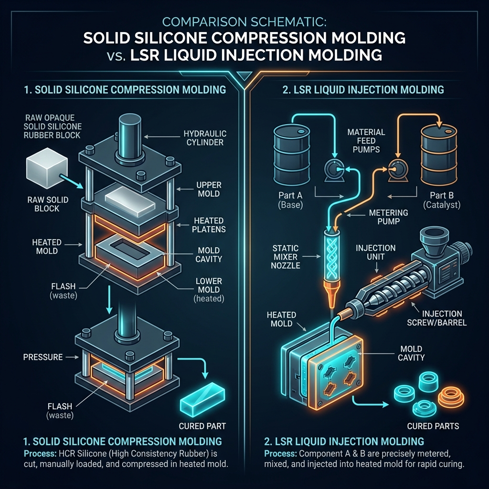
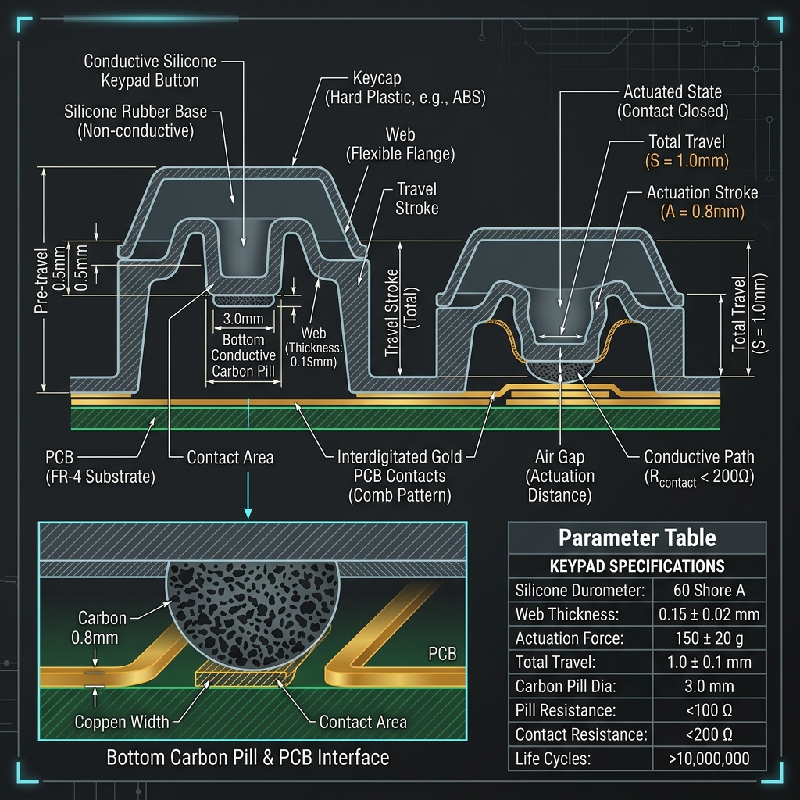
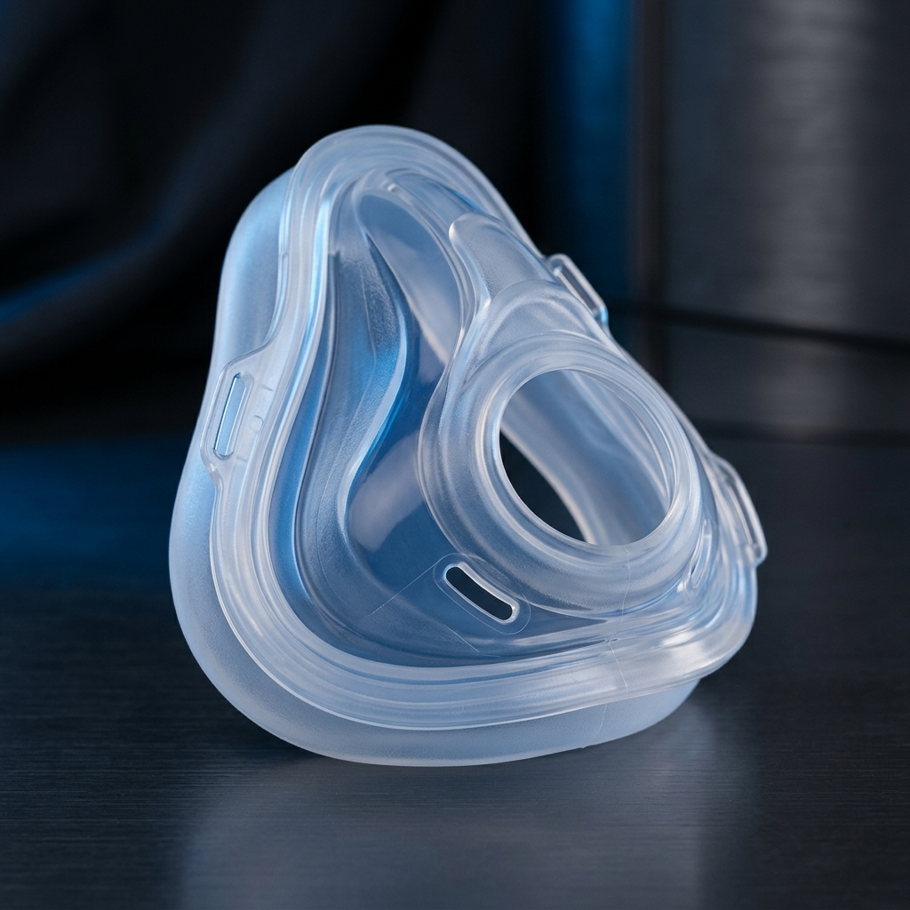

技術專欄
極端耐油與化學溶劑環境下的特種橡膠選擇：氟橡膠（Viton）與氟矽橡膠（FVMQ）性能與應用對比
分類：前沿科技矽膠應用 | 發布日期：
在石油化工、半導體晶圓廠、航太軍工及汽車燃油系統中，密封件與橡膠管路常需面臨極苛刻的考驗，如高溫燃油、強酸強鹼、化學溶劑或極端高低溫差。在這些極限工況下，普通矽膠或一般橡膠易發生膨脹、硬化甚至破裂。為了確保設備長期運作的安全性，氟橡膠（Viton/FKM）與氟矽橡膠（FVMQ）是兩種最關鍵的特種彈性體。本篇將深度解析這兩種材料在耐化學性、耐溫範圍及物理強度上的差異，為工程師提供精準的選型指引。
在工業精密防護與密封應用中，材料的「化學惰性」與「耐溫能力」直接決定了零部件的壽命。當一般密封材質如丁腈橡膠（NBR）或普通矽膠因接觸強溶劑、燃油而發生溶脹（Swelling）失效時，特種氟彈性體即成為唯一的解決方案。氟橡膠（Viton/FKM）與氟矽橡膠（FVMQ）雖然都含有氟元素，但由於主鏈結構不同，其物理特性與適用場景有顯著差異。以下為兩大特種材料的深度對比：
一、 氟橡膠（Viton / FKM）：高溫與強腐蝕環境下的防護標竿
氟橡膠（常以杜邦品牌名 Viton 著稱，學術統稱 FKM）是由含氟單體共聚而成的飽和碳鏈彈性體：
- 耐化學與耐油性： FKM 具有極強的化學穩定性，能抵抗絕大多數碳氫化合物、雙酯類潤滑油、強酸、高濃度燃油及有機溶劑。其耐化學溶劑性能在所有橡膠材料中首屈一指。
- 耐溫極限： 長期工作溫度可達 -15°C 至 220°C，短期可承受高達 250°C 的高溫，在高溫下仍具有極高的機械強度與耐壓縮變形性能。
- 局限性： 氟橡膠的低溫彈性較差。當環境溫度降至 -15°C 以下時，FKM 會逐漸失去彈性並變硬（脆化溫度約為 -20°C ~ -30°C），不適用於極寒氣候或高空航太環境。此外，其對酮類（如丙酮） and 低分子量酯類的耐受性較弱。
二、 氟矽橡膠（FVMQ）：兼具寬溫與耐燃油性的全天候精英
氟矽橡膠（FVMQ）是在矽氧烷主鏈上引入氟烷基（Fluorine Groups）改性而成的共聚物，結合了矽膠與氟橡膠的雙重優勢：
- 耐化學與耐油性： 藉由含氟側鏈的保護，FVMQ 對非極性溶劑、航空煤油、潤滑油、甲醇燃油及液壓油等具有與氟橡膠相當的優異抗耐性，極不易發生溶脹。
- 卓越的耐寬溫特性（-60°C 至 200°C）： 這是 FVMQ 最核心的優勢。在 -55°C 至 -60°C 的極低溫下，它仍能保持優異的柔軟度與氣密彈性，同時高溫工作極限可達 200°C。
- 局限性： 氟矽橡膠的原材料成本高昂，且機械強度（如拉伸強度、抗撕裂強度及耐磨耗性）低於氟橡膠（Viton），因此在設計時多用於靜態密封或低動態應用的精密墊片中。
三、 氟橡膠（Viton/FKM）與氟矽橡膠（FVMQ）物理特性對照表：
| 物理特性 / 評估指標 |
氟橡膠 (Viton / FKM) |
氟矽橡膠 (FVMQ) |
| 工作溫度範圍 |
-15°C ~ 220°C (短期 250°C) |
-60°C ~ 200°C (低溫性能極佳) |
| 耐燃油 / 航空煤油性 |
極優（溶脹率低） |
極優（溶脹率低） |
| 耐強酸 / 強鹼腐蝕性 |
極優 |
中等至優 |
| 拉伸與撕裂強度 |
高 (適合高動態密封) |
中等 (不建議高動態拉扯) |
| 主要應用領域 |
車用燃油管、化學泵閥密封、半導體真空室 |
航太航空密封、高低溫油路系統、戶外傳感器 |
四、 鈞翔實業 — 您特種橡膠客製化與精密熱壓代工的後盾
特種橡膠如 Viton 與 FVMQ 的加工窗口窄，成型難度顯著高於一般橡膠。鈞翔實業有限公司擁有 30 年以上的模具研製與特殊配方調改經驗，能為客戶提供高性價比的量產服務：
- 定製配方與硬度調改： 支援 Shore A 50°~90° 的氟橡膠與氟矽橡膠硬度調整，並可配合特定的防靜電、耐化學規格調配專屬配方。
- 橡膠金屬表面接著（Rubber-to-Metal Bonding）： 我們擁有專屬的金屬表面接著噴塗線。能將氟橡膠或氟矽橡膠與金屬件（如不鏽鋼、銅、鋁合金）在金型內完成高強度一體成型，膠合介面拉拔強度大於橡膠本身的抗拉力，確保在極端化學環境下絕不脫膠。
我們提供從樣品試作、3D 圖檔技術可行性評估到量產出廠的一站式代工服務。如果您有高難度的特種橡膠密封件或包金屬配件需求，歡迎提供 3D 圖檔（STEP/IGS）或樣品，與我們的技術團隊展開深度探討。
技術專欄
無人機精密矽橡膠零件設計指南：避震球、防水圈與起落架避震結構材料全解析
分類：前沿科技矽膠應用 | 發布日期：
隨着無人機（UAV/Drones）在智慧配送、電網巡檢與農業噴灑等領域迎來爆發性成長，設備零件的環境耐受度與可靠度已成為設計關鍵。無人機的核心避震、氣密密封與結構保護高度依賴高分子矽膠與橡膠零組件。本篇將從硬度校調、防震阻尼到液態矽膠（LSR）射出與異材結合等製造製程，深入解析無人機精密矽橡膠零件的設計指南。
在無人機（UAV）系統的硬體設計中，飛控晶片、相機雲台以及動力系統對高頻震動與雨水塵埃極度敏感。精密矽橡膠零件雖不起眼，卻是決定無人機能否穩定飛行、防範水分滲漏並減緩降落衝擊的「隱形力學屏障」。以下為您詳解無人機三大核心應用場景下的橡矽膠零件設計指引：
1. 雲台相機避震球與馬達減震墊（阻尼避震設計）
馬達高速旋轉（50Hz~200Hz）會導致相機畫面產生「果凍效應」。
- 雲台避震球：設計時需使用 Shore A 30°~45° 的高阻尼（tan δ）矽橡膠，藉由其黏彈性吸收微震動，並需配合相機重量精算避震球的剪切與壓縮剛性。
- 馬達減震墊：推薦使用橡膠與金屬共價接著製程（Rubber to Metal Bonding），將特製丁腈橡膠（NBR）或氟橡膠直接包覆於鋁合金馬達安裝座上，有效阻絕高頻共振，防止陀螺儀訊號失真。

▲ 鈞翔精密為客戶客製化生產的無人機高阻尼避震球與異材接著馬達座
2. 電控艙防水密封與轉軸防塵套（極端耐候氣密）
工業級與物流配送無人機必須具備全天候執勤能力，需應對高空嚴寒（-40°C以下）與暴雨侵襲。
- 防水密封圈：傳統密封件低溫易硬化脆裂。採用 LSR 液態矽膠射出成型 的密封墊片，具有極佳的抗永久壓縮變形率（< 10%）與耐高低溫極限（-60°C ~ 250°C），能實現 IP67/IP68 氣密防護，避免電池與飛控舱水汽滲入。
- 舵機波紋套：在 VTOL 無人機轉軸等動態密封處，使用壁厚僅 0.3mm ~ 0.5mm 的高撕裂強度矽橡膠波紋套，在阻擋灰塵雨水同時，確保不阻礙舵機的極致轉向回饋。
3. 降落緩衝腳墊與電池固定墊（高頻物理防護）
- 起落架緩衝墊：選用高耐磨、耐撕裂的丁腈橡膠（NBR）或聚氨酯（PU），吸收降落瞬間的巨大物理衝擊，防止碳纖維起落架微損。
- 電池固定止滑墊：使用耐候性佳的三元乙丙橡膠（EPDM），在高溫日照與劇烈氣流中，仍能維持強大摩擦力防止電池包高速移位。
無人機核心橡矽膠零組件設計對照表：
| 零件名稱 |
推薦材料 |
硬度範圍 |
關鍵性能指標 |
| 雲台避震球 |
高撕裂矽膠 / 天然膠 |
Shore A 30°~45° |
高阻尼係數、高回彈性、耐撕裂 |
| 電控艙防水圈 |
LSR 液態矽膠 |
Shore A 50°~65° |
抗低溫收縮、低壓縮變形率（<10%） |
| 馬達避震座 |
耐油 NBR 橡膠 |
Shore A 60°~70° |
拉拔強度 > 4.5 MPa（與金屬接著良好） |
| 起落架緩衝墊 |
聚氨酯 (PU) / CR 橡膠 |
Shore A 70°~80° |
超高耐磨耗、抗撕裂強度 |
四、 鈞翔實業 — 您高可靠度航太級代工的堅實後盾
無人機的避震球與密封件多為非標客製件。鈞翔實業有限公司深耕精密橡矽膠製品代工30年，廠區配備液態矽膠（LSR）射出機台與獨立的橡膠金屬表面接著處理線。我們能為設備商提供從客製化配方調配（耐寒、高撕裂）、高精度模具研製、快速原型打樣到量產出廠一站式解決方案，協助您的產品通過嚴苛的環境可靠度測試，搶占全天候無人載具市場商機。
技術專欄
AI 伺服器與無人機的崛起：高階精密矽橡膠零件的關鍵應用與設計趨勢
分類：前沿科技矽膠應用 | 發布日期：
隨著人工智慧（AI）伺服器及無人載具（無人機）產業的爆發性成長，硬體系統對於「極端散熱性能」、「高頻防震減震」與「戶外極端防水防塵」的規格要求已推升至工業與航太級標準。矽橡膠材質憑藉其無可替代的彈性、耐溫、絕緣與化學穩定性，成為推動兩大尖端科技穩定運作的「關鍵零組件」。本篇將深入解析產品結構設計與量產技術...
在人工智慧 (AI) 伺服器與無人載具 (UAV) 系統中，硬體架構的可靠性是演算法能穩定發揮的底氣。面對高壓、高熱、動態震動、電磁波干擾 (EMI) 及全天候嚴酷環境，精密矽膠與橡膠元件提供了完美的解決方案。以下為兩大高成長硬體市場的深度應用分析與材料設計要點：
一、 AI 伺服器與高算力機櫃中的橡矽膠關鍵零件
AI 運算晶片（GPU/ASIC）在高負載下發熱量巨大，且高速運作的冷卻系統及風扇運作時產生的微震動會直接干擾高頻訊號傳輸。這對密封、導熱與防震提出了極高要求：
1. 超導熱介面材料 (Thermal Conductive Silicone, TIM)
GPU/CPU 晶片與散熱片、均溫板之間，需填充高熱導率的導熱矽膠片或導熱凝膠。透過精密配方在矽膠基材中填充氧化鋁、氮化硼或碳化矽等陶瓷微粒，在維持 Shore A 10°~25° 極佳彈性與間隙填充性能的同時，達到 3.0~8.0 W/m·K 以上的熱傳導效率，大幅降低晶片溫升。
2. 水冷/液冷系統防漏密封圈 (Liquid Cooling Gaskets)
液冷（CDU 水路、水冷板）正成為 AI 機櫃散熱主流。水冷接頭與冷卻板的密封圈需在長達數年的 80°C 高溫水汽環境中工作，對永久壓縮變形率（要求 < 10%）與耐化學降解（耐乙二醇水溶液）有極高要求。採用 LSR 液態矽膠射出成型 的 O型環與異形密封墊，是防堵伺服器內部液漏短路的唯一防線。

▲ 鈞翔精密生產的 AI 伺服器超導熱矽膠片與高氣密 LSR 密封圈
3. 導電橡膠電磁遮蔽蓋與絕緣墊圈 (EMI Shielding Gaskets)
AI 伺服器內部有著大量高頻通訊模組，電磁干擾 (EMI) 會顯著降低資料傳輸速率。我們透過在矽膠中混入鎳包石墨、銀包銅等導電顆粒，開發出具有共擠或壓出成型的電磁遮蔽導電橡膠條。這些零件既能防塵，又能阻絕高頻雜訊，電阻率可控制在 < 0.01 Ω·cm。
二、 無人機 (Drones) 對精密避震與耐候氣密零件的技術需求
專業級與工業級無人機（如農用植保、電力巡檢、防汛搜救）需在高空嚴寒、雨水沖刷與螺旋槳馬達高速共振環境中作業，對零件重量、抗震能效有著苛刻考驗：
▲ 鈞翔無人機雲台相機高阻尼避震球及馬達金屬接著接著件
1. 雲台相機高阻尼減震球 (Gimbal Dampening Balls)
旋翼旋轉時產生的 50Hz~200Hz 高頻震動會使航拍畫面產生「果凍效應」（Jello Effect）。雲台減震球必須精準控制硬度（Shore A 30°~45°）與阻尼值（tan δ）。我們採用高撕裂強度、高彈性天然膠與矽膠複合配方，既有足夠剛性支撐相機重力，端能完美隔絕螺旋槳的微震動。
2. 馬達減震座與金屬接著接著件 (Motor Mount Dampers)
無人機馬達座是震動與溫升源頭。利用**橡膠與金屬接著技術（Rubber to Metal Bonding）**將鋁合金與特製丁腈橡膠（NBR）在模具內共價結合，免去二次裝配，不僅具備高拉拔力強度，亦能阻隔馬達震動往機架（碳纖維板）傳遞，保護陀螺儀晶片不受干擾。
3. 起落架緩衝腳墊 (Landing Gear Shock Absorbers)
選用高耐磨、耐撕裂的丁腈橡膠 (NBR) 或聚氨酯 (PU) 製造起落架緩衝墊，吸收重載無人機降落時的瞬間物理衝擊，避免機身碳纖維結構微損龜裂。
4. 動力舵機與擺臂防水防塵套 (Servo Dust Boots)
在垂直起降（VTOL）傾轉旋翼無人機的傾轉轉軸、舵機連桿處，使用極薄壁（0.3mm~0.5mm）的波紋狀矽橡膠防塵套筒。高強度的矽膠能在阻擋農藥噴灑、沙塵及雨水的同時，確保不阻礙舵機的極致轉向回饋彈力。
5. 外殼 IP67/IP68 防水圈與 LSR 雙色包膠 (Overmolding)
為實現大雨中執勤，機殼與電池艙門的交接面必須實現完美防水。LSR 雙色射出技術將液態矽膠直接包覆在硬質 PC/PA 塑膠框架上，無組裝公差，且在 -40°C ~ 85°C 極端環境中不會有脫膠、龜裂、老化漏水的風險。
AI 伺服器與無人機零組件規格設計對照表：
| 核心零件 |
推薦材質 |
核心規格指引 |
關鍵加工製程 |
| 晶片導熱片 |
陶瓷粉填充矽膠 |
導熱率 3~8 W/m·K、Shore A 15° |
混煉壓出 / 沖切加工 |
| 液冷系統密封件 |
LSR 液態矽膠 |
壓縮變形 < 10%、耐冷卻液 |
高精度 LSR 自動射出 |
| 雲台相機避震球 |
高撕裂矽橡膠 |
高阻尼（tan δ）、Shore A 35° |
真空抽氣熱壓 / LSR 射出 |
| 無人機外殼防水 |
LSR 矽膠 + PC/PA |
IP68防水、剪切強度 > 4.0 MPa |
LSR 雙色二次包膠 (Overmolding) |
三、 鈞翔實業 — 您的前沿硬體量產最佳合作夥伴
多數 AI 與無人機專案的精密矽膠件均為非標客製化零件。鈞翔實業有限公司擁有 30 年以上模具研製與材料改性研發技術，在新北新莊廠區設有高精度模具加工廠與自動化 LSR 射出設備。我們能針對客戶的高散熱、高阻尼減震或極端氣候防水需求，進行 NRE 客製化模具開發，提供極具競爭力的打樣與高良率量產代工服務。歡迎各界提供 3D 圖檔（STEP/IGS）或樣品，與我們的技術團隊進行深度探討。
技術專欄
固態矽膠熱壓 vs. LSR 液態矽膠射出：如何選擇最適合的客製化製程？
分類：矽橡膠成型技術 | 發布日期：
許多工程師與採購在尋找矽膠代工廠開發新產品時，常面臨「要用傳統固態熱壓成型」還是「液態矽膠射出 (LSR)」的抉擇。這兩種製程在模具成本、精密度與適合的量產數量上有極大差異。本篇將為您詳細解析...
在開發矽橡膠製品時，選擇正確的成型工藝不僅關係到產品品質，更直接決定了模具預算與長期量產成本。以下為您深入分析傳統固態熱壓成型與現代自動化液態矽膠射出的差別：
1. 固態矽膠真空熱壓成型 (Solid Silicone Pressing)
這是歷史悠久、技術成熟的成型方式，使用混煉好的固態矽膠原料（似黏土狀）。
- 生產製程：將原料裁切並秤重後，由人工放置到預熱的鋼模模腔中，透過油壓機閉合施加高溫高壓，使矽膠在模具內硫化熟化。
- 優勢：模具開發難度與精密要求相對較低，模具費用便宜。適合中低批量生產，尤其是尺寸大、結構簡單的矽膠件。
- 劣勢：人工擺料效率受限，毛邊較厚，尺寸公差通常為 ±0.15mm ~ ±0.20mm。
2. LSR 液態矽膠射出成型 (Liquid Silicone Rubber Injection)
這是適應精密高分子產品需求而生的自動化射出製程，使用雙組份（A劑與B劑）低黏度液態矽膠。
- 生產製程：A/B原料以 1:1 精密比例混合後，經由精密流道系統射入加熱的密閉模腔內，在數秒至數十秒內快速高溫固化。
- 優勢：生產週期極短。流動性極佳，可製造結構複雜、壁厚極薄的微米級零件，尺寸公差精準控制在 ±0.02mm ~ ±0.05mm。
- 劣勢：模具設計極度精密，初期造價較高，建議搭配大批量量產以攤提模具折舊成本。

▲ 固態矽膠熱壓與液態矽膠射出 (LSR) 自動化成型工藝對比圖
製程選擇決策表格：
| 評估指標 |
固態矽膠熱壓 |
LSR 液態射出 |
| 模具費用 |
低至中等（經濟實惠） |
高（技術要求高） |
| 單件加工費 |
中（含手動人工費） |
低 |
| 精密度 / 公差 |
±0.15mm ~ ±0.20mm |
±0.02mm ~ ±0.05mm |
| 適合批量 |
小量至中批量 (1K~20K) |
大批量生產 (>10K 起) |
技術專欄
矽膠包塑膠與金屬（異材結合）：如何確保緊密黏合、絕不脫膠的關鍵技術
分類：異材結合包膠技術 | 發布日期：
異材包膠成型（Overmolding / Insertion Molding）是將彈性矽膠直接一體成型於硬質塑膠（PC/PA/PBT）或金屬底座（鋁合金/不銹鋼/銅/鐵件）上的工藝。如何在各種外力下，維持其化學與物理結合性，考驗代工廠的模具開發實力...
在電子防水配件、醫療導管接頭、汽車減震件等設計中，「矽膠包塑膠」與「矽膠包鐵/包金屬」的結構極為常見。此工藝可以省去後段人工黏合組裝，並能實現極佳的 IP68 防水防塵功能。以下是確保兩種不同材質完美架橋結合、絕不脫離的四大核心步驟：
1. 嚴格選擇基材耐溫極限
矽膠的硫化成型溫度通常介於 130°C 至 175°C 之間。因此，在進行「矽膠包塑膠」時，作為骨架的硬質塑膠基材必須具備耐高溫能力，如 PC（聚碳酸酯）、PA+GF（玻纖增強尼龍）、PBT 或 PEEK 等。若是耐溫低的塑膠（如 ABS、PE），則容易在模具內融化變形。
2. 基材表面物理處理與活化 (Surface Preparation)
完美的結合建立在乾淨且能形成物理微咬合的表面。金屬嵌件（如不鏽鋼或銅）在放入模具前，需先進行去油、去氧化物程序，並視情況進行噴砂（Sandblasting）或電漿活化處理（Plasma Treatment），增加表面微觀粗糙度，以利矽膠嵌入物理微孔中。
3. 均勻塗佈黏著架橋劑 (Primer Application)
這是決定化學鍵結成敗的關鍵。底漆（Primer）分子具備雙重活性官能基：一端能與金屬（或塑膠）表面產生分子間作用力或共價鍵，另一端能參與矽膠在高溫熟化時的交聯反應。塗佈底漆時，必須嚴格控制其塗層厚度與烘乾溫度，太厚容易產生脆化層，太薄則黏接不牢。
4. 精密模具定位與高壓氣密控制
高壓矽膠射出時，流動的矽膠會對內部的金屬或塑膠嵌件產生強大的衝擊力。如果模具定位不準，嵌件容易產生微米級的位移（Shift），導致成品厚度不均或局部露骨架。此外，模具必須設置良好的真空排氣結構，避免結合面殘存殘氣，阻礙架橋劑的化學反應。
鈞翔實業有限公司擁有 30 年以上客製代工經驗，在新北新莊工廠內設置了獨立的表面處理區與精密拉拔測試機台，能針對客戶各類複雜的異材結合組件，提供最穩定的黏著品質與防水保證。
技術專欄
導電矽膠按鍵設計指南：電阻、行程與橡膠彈力規格全面解析
分類：導電按鍵設計 | 發布日期：
導電矽膠按鍵廣泛應用於工業儀器、遙控器、醫療器材與汽車中控台。要設計一個手感舒適、反饋清脆且導電信號穩定可靠的按鍵，必須在「彈力回饋」、「行程設計」與「導電接點」上進行綜合調校...
矽膠按鍵之所以有「按下去彈上來」的手感，完全依賴其內部的「斜壁（Web）」設計。優良的按鍵設計需要掌握以下三大物理核心數值：
1. 按鍵下壓彈力 (Actuation Force) 與手感比率 (Tactile Ratio)
按下按鍵所需的力道 (F1)。消費級電子（遙控器）為 80g ~ 120g；工業儀器、醫療及車用面板，為防誤觸通常要求較重的 150g ~ 250g。手感比率 `(F1 - F2) / F1` 應控制在 40% ~ 60% 之間，以提供清脆的點擊感。
2. 行程設計 (Travel) 與預壓 (Pre-travel)
常規按鍵總行程約在 1.0mm ~ 2.0mm。行程過短（如 < 0.8mm）則不易有清晰反饋；行程過長則易引起手指疲勞。
3. 導電接觸面材料的選擇 (Conductive Contacts)
導電碳粒 (Carbon Pill)（電阻 100~150Ω）是最實惠耐磨的方案；金/銀粒 (Metal Pill)（電阻 < 10Ω）用於低延遲的高精密控制；印導電油墨則適合薄型化設計。

▲ 矽膠導電按鍵斜壁、行程、預壓及底部導電碳粒接觸結構設計示意圖
鈞翔實業具備 30 年以上精密模具研發實力，能提供模具一站式服務，協助您調整按鍵斜壁厚度以達到最完美的手感回饋。我們的工廠位於新莊新樹路，歡迎提供圖面進行技術討論。
客戶案例分享
醫療級 LSR 液態矽膠呼吸面罩配件：高品質與精密的量產實踐
分類：醫療器械矽膠代工 | 發布日期：
台灣知名呼吸醫療器材大廠，委託生產新一代睡眠呼吸面罩密封矽膠墊圈。產品要求：必須符合 FDA 食品級與 ISO 10993 生物相容性規範、嚴格控制毛邊在 0.03mm 以下，且製程中不能有人為油脂污染...

▲ 鈞翔實業生產的無塵無污染、通過生物相容性檢測醫療級 LSR 呼吸面罩墊片
【面臨的技術挑戰】
面罩長時間與肌膚接觸，高溫消毒時不能釋放揮發物。傳統固態矽膠壓出有人工操作，易夾雜粉塵或人為油脂，且複雜3D構造容易產生毛邊導致肌膚不適。
【鈞翔的技術解決方案】
採用全閉鎖雙液型液態矽膠自動計量系統，原料 100% 無空氣暴露與人工接觸。設計精密分模與真空排氣系統，毛邊控制在 0.03mm 以下。優化硫化參數以排除微量小分子，順利通過 FDA 檢測。
【量產效益】
單件生產週期縮短至 25 秒，產能提升 380%，成品出廠良率高達 99.7%，協助客戶順利開拓全球醫療配件市場。
客戶案例分享
車載高精密防水插座：LSR 雙色包膠 (Overmolding) 代工合作案
分類：汽機車電子防水密封 | 發布日期：
歐美一級車用零部件供應商，需在防錯硬質 PA66 塑膠插座骨架上，直接成型一層柔軟的液態矽膠密封圈。產品需要通過 IP69K 耐高溫高壓水柱沖刷測試，且需要在 -40°C ~ 150°C 的極端氣候循環中維持穩定黏合...
【面臨的技術挑戰】
汽車行駛的高頻震動易使傳統套裝的 O型環位移，導致漏水與短路。因此客戶決定採用 Overmolding 一體成型製程。挑戰在於 PA66 與矽膠結合面極小，且需在極高射出壓力下貼合不脫膠。
【鈞翔的技術解決方案】
使用雙色二次射出定位模具，定位精度達 ±0.01mm 以防漏膠溢料。挑選自粘性液態矽膠材料，省去底漆塗佈。設計特殊膠道，確保高溫射出時熔融界面交聯，剪切強度大於 4.5 MPa。
【量產效益】
成功通過車廠 IP69K 最高等級防水檢測與汽車零組件大廠震動測試，省去人工套圈成本，封裝可靠度提升至 100%。

▲ LSR 液態矽膠雙色二次射出於硬質 PA66 汽車插座的防漏包膠成品
客戶案例分享
工業重載避震腳墊（矽膠包鐵件）：優化高撕裂強度物理黏合性能
分類：重型工業防震避震 | 發布日期：
重型機械設備大廠委託開發一款防震支撐腳墊，核心結構為厚重的內部鐵件骨架，外圍包覆一層具有高吸震效能的橡矽膠。產品需承受超過 500 公斤的重壓力，且在高頻率強烈震動環境下，橡膠與內部鐵件絕不脫膠崩離...
【面臨的技術挑戰】
重載避震器的鐵件骨架體積較大，熱傳導效率與矽膠不同，在模具內容易引起受熱不均進而導致局部硫化不足。此外，設備運作時產生持續的高頻震動，結合界面會承受極大的動態剪切力，傳統壓出成型極易使金屬與橡膠剝離，失去避震和緩衝效果。
【鈞翔的技術解決方案】
- 表面改性噴砂與化學清洗：我們對內部鐵件（金屬骨架）先進行 80 目粗金剛砂的高壓噴砂，打毛金屬表面以提供優異的物理機械咬合面；再以專用化學溶劑去除微量金屬加工油漬。
- 專業金屬矽膠架橋劑（底漆）噴塗技術：在防塵潔淨環境下，將特製底漆均勻噴塗在鐵件結合面上，控制厚度於 5 ~ 10 微米。底漆能與金屬表面的羥基產生共價鍵，並與矽膠分子發生雙硫交聯反應。
- 高溫真空熱壓成型與二次加硫控制：使用抽真空熱壓機，在模具內先抽真空以消除結合界面的氣體殘留，確保結合無孔洞。並設定長達 4 小時的二次加硫，使材料熟化更加均勻。
【量產效益】
開發出來的避震腳墊順利通過客戶 20 萬次高頻重載壓縮測試，拉拔破壞測試中表現為橡膠基材破壞（代表金屬與矽膠的結合面強度已超越橡膠本身的抗拉扯極限），成功為客戶提供最高耐用度防護。